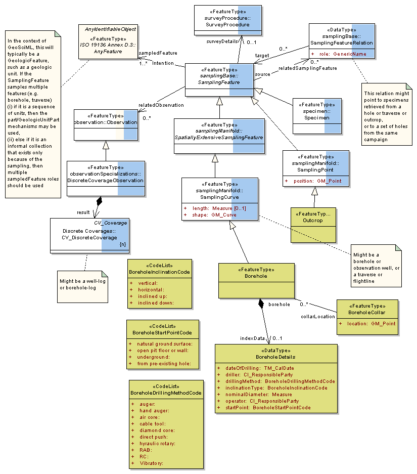
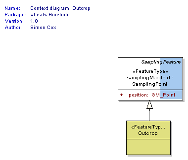

Package GeoSciML/Borehole
The GeoSciML Borehole package contains model elements for representing Boreholes. This is primarily through re-use of standard components from the (external) Observations and Measurements package.
Class Summary |
|
| <<FeatureType>> Classes | |
Borehole
<<FeatureType>>
|
A borehole is the generalized term for any narrow shaft drilled in the ground, either vertically or horizontally. |
BoreholeCollar
<<FeatureType>>
|
Feature corresponding to the start point of a borehole. These are often plotted on a map. |
Outcrop
<<FeatureType>>
|
The place where a rock body or rock surface emerges at the earth's surface. An outcrop may be concealed beneath superficial deposits such as peat or alluvium. |
| <<DataType>> Classes | |
BoreholeDetails
<<DataType>>
|
Borehole specific index (or metadata) information |
| <<CodeList>> Classes | |
BoreholeDrillingMethodCode
<<CodeList>>
|
|
BoreholeInclinationCode
<<CodeList>>
|
|
BoreholeStartPointCode
<<CodeList>>
|
|
Tagged Values |
||
| Tag | Value | Notes |
| xsdDocument | borehole.xsd | Description: Relative path to XML Schema document corresponding to this package. |
UML Diagram: Summary diagram: Boreholes and observations

UML Diagram: Context diagram: Outcrop
